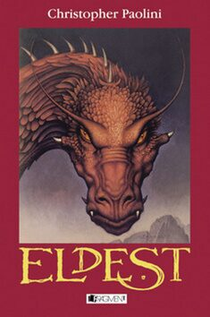
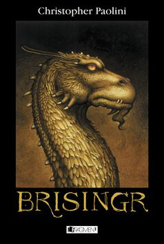
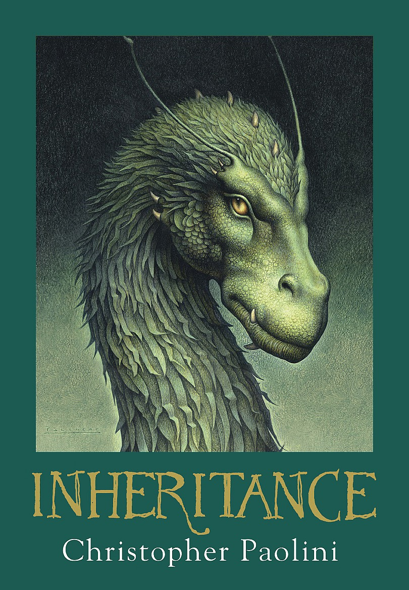
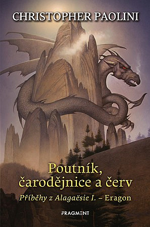
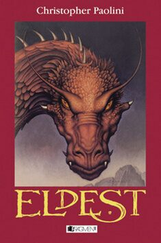
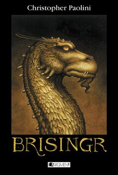
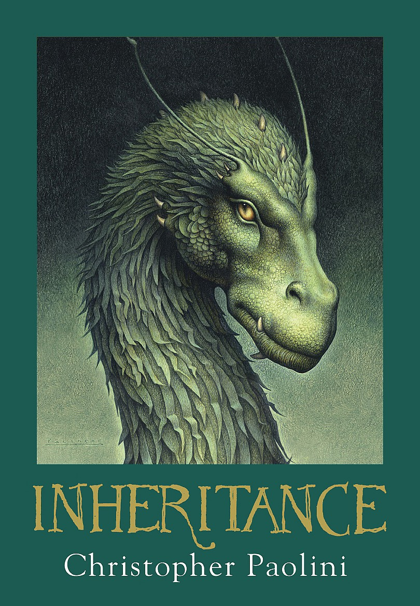
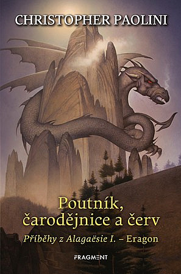

Stručně o Paolinim
Narodil se 17.listopadu 1983, je americk spisovatel a autor knih Eragon, Eldest, Brisingr, Inheritance a Poutník, čarodejnice a červ. Dohromady se tato sága jmenuje Odkaz dračích jezdců. První knihu začal psát ve svých patnácti letech a byla vydaná o čtyři roky později. Všechny postavy si vymyslel až na jednu kterou pojmenoval po své sestře. Původně psal jenom pro radost a nechtěl publikovat, ale nakonec se rozhodl jinak. Kniha byla dokonce zfilmována. Žil na Aljašce se svými rodiči, sestrou a kočkou s kokršpanělem v Montaně. K tvorbě ho inspirovala zdejší příroda a půvab měst.

Seznam knih, které Paolini napsal
Odkaz dračích jezdců
Eragon
Eldest
Brisingr
Inheritance
Poutník, čarodejnice a červ
 






